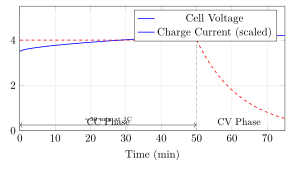
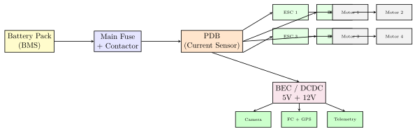

Chapter 6: Drone Power Systems¶
6.1 Power System Overview¶
The power system of an unmanned aerial vehicle (UAV) is its metabolic infrastructure. Every joule consumed by motors, avionics, payloads, and thermal management must originate from the on-board energy store, traverse power-conditioning electronics, and arrive at the load within tight voltage and current tolerances. Understanding the distinction between energy and power is the first principle from which all subsequent design decisions flow.
6.1.1 Energy versus Power¶
Energy (\(E\)) is the capacity to do work, measured in watt-hours (Wh) or joules (\(1\,\text{Wh} = 3600\,\text{J}\)). A battery pack rated at \(22\,\text{Ah} \times 22.2\,\text{V} = 488\,\text{Wh}\) stores that fixed quantity of chemical energy regardless of how fast it is drawn.
Power (\(P\)) is the rate of energy transfer, measured in watts (\(\text{W} = \text{J/s}\)). A multi-rotor drawing \(800\,\text{W}\) during hover depletes its \(488\,\text{Wh}\) pack in approximately \(36.6\,\text{min}\):
Specific energy (\(e_s\), Wh/kg) describes how much energy is stored per kilogram of the source — it governs flight endurance. Specific power (\(p_s\), W/kg) describes how fast that energy can be delivered per kilogram — it governs peak-load capability. The relationship between these two metrics, plotted on logarithmic axes, is the celebrated Ragone diagram.
6.1.2 Ragone Diagram¶
Figure 6.1 illustrates a representative Ragone plot for four energy-storage technologies relevant to UAV applications. Batteries occupy the central region: high specific energy relative to supercapacitors, but far lower specific power than liquid fuels. The diagonal lines of constant discharge time (\(e_s / p_s = t_d\)) allow rapid endurance estimation for a given technology.

6.1.3 Power System Architecture¶
A typical UAV power system follows a layered architecture:
Each stage introduces an efficiency penalty \(\eta_i < 1\). The overall system efficiency is:
For a well-designed brushless-motor drive train: \(\eta_{\text{sys}} \approx 0.99 \times 0.98 \times 0.93 \times 0.90 \times 0.80 \approx 0.645\).
6.1.4 Typical UAV Power Budget¶
Table 6.1 lists representative power draws for a 5 kg quadrotor UAV in steady hover.
| Subsystem | Voltage Rail | Current (A) | Power (W) |
|---|---|---|---|
| 4\(\times\) Brushless Motors (total) | 22.2 V (6S) | 33.0 | 733 |
| 4\(\times\) ESC self-consumption | 22.2 V | 0.4 | 9 |
| Flight controller (FC) | 5.0 V | 0.5 | 3 |
| GPS + compass module | 5.0 V | 0.1 | 0.5 |
| RC receiver | 5.0 V | 0.1 | 0.5 |
| Telemetry radio (900 MHz, TX) | 5.0 V | 0.8 | 4 |
| EO/IR camera | 12.0 V | 0.5 | 6 |
| 2-axis gimbal | 12.0 V | 0.8 | 10 |
| Navigation lights (LED) | 5.0 V | 0.4 | 2 |
| BEC/DCDC converter losses (\(\sim\)5%) | — | — | 2 |
| Total | 770 |
6.1.5 Power Quality Requirements¶
Avionics subsystems are sensitive to supply-voltage variations. The key quality metrics are:
-
Ripple voltage \(V_r\): peak-to-peak AC component riding on the DC rail. Inertial measurement units (IMUs) and GPS receivers typically require \(V_r < 50\,\text{mV}\) at switching frequencies.
-
Transient response: the voltage excursion caused by sudden load steps (motor spin-up). A well-regulated BEC should recover within \(\Delta t < 100\,\mu\text{s}\) and \(\Delta V < 100\,\text{mV}\).
-
Hold-up time: duration the avionics rail remains within specification after main-bus power loss; typically \(>50\,\text{ms}\) provided by bulk capacitance.
The voltage sag on the main bus during a motor transient is:
where \(r_{\text{batt}}\) is the battery internal resistance, \(R_{\text{wire}}\) the harness resistance, and \(L_{\text{wire}}\) the parasitic inductance. For a 6S LiPo with \(r = 6\,\text{m}\Omega\), \(R_{\text{wire}} = 2\,\text{m}\Omega\), a \(50\,\text{A}\) step produces \(\Delta V_{\text{sag}} \approx 0.4\,\text{V}\) of resistive sag plus an inductive spike that must be absorbed by the ESC capacitors.
6.1.6 Redundancy Strategies¶
High-reliability UAVs implement power redundancy at multiple levels:
-
Dual battery with diode OR-ing: Two batteries share a common bus via Schottky diodes. The forward voltage drop \(V_f \approx 0.4\text{--}0.7\,\text{V}\) causes an efficiency penalty; ideal-diode controllers (e.g., LTC4412) use MOSFETs to reduce drop to \(<10\,\text{mV}\).
-
Hot-swap capable modules: A battery can be replaced mid-mission if the system includes a buffer capacitor that maintains the bus during swap. Hold-up energy:
\[E_{\text{hold}} = \tfrac{1}{2}C_{\text{bulk}} \left(V_{\max}^2 - V_{\min}^2\right).\tag{6.5}\]For \(C_{\text{bulk}} = 10\,\text{mF}\), \(V_{\max} = 25\,\text{V}\), \(V_{\min} = 18\,\text{V}\): \(E_{\text{hold}} = 2.3\,\text{J}\), sufficient for \(\sim\!3\,\text{ms}\) at 770 W.
-
Cross-strapped avionics rails: Primary and secondary flight controllers each have independent 5 V BECs, each capable of powering all critical avionics.
6.2 Lithium Polymer (LiPo) Batteries¶
Lithium polymer batteries dominate the small-to-medium UAV market because they combine high specific energy, high discharge rates, and flexible mechanical form factors. Understanding their electrochemistry, electrical characteristics, and failure modes is essential for safe and efficient system design.
6.2.1 Electrochemistry¶
A LiPo cell is a lithium-ion battery using a polymer-gelled electrolyte in place of a liquid electrolyte. The fundamental half-reactions are:
Positive electrode (cathode — LiCoO\(_2\)):
Negative electrode (anode — graphite):
The net cell reaction:
The electrolyte is lithium hexafluorophosphate (LiPF\(_6\)) dissolved in a carbonate solvent (ethylene carbonate, dimethyl carbonate) absorbed into a porous polymer matrix (PVDF-HFP). The polymer matrix allows cell fabrication in thin, flexible pouches — hence the “polymer” designation.
6.2.2 Voltage Characteristics¶
A single LiPo cell has:
-
Nominal voltage: \(V_{\text{nom}} = 3.7\,\text{V}\)
-
Fully charged: \(V_{\text{max}} = 4.20\,\text{V}\) (high-voltage LiHV cells: 4.35 V)
-
Storage voltage: \(V_{\text{store}} = 3.80\,\text{V}\)
-
Discharge cutoff: \(V_{\text{cut}} = 3.0\text{--}3.5\,\text{V}\) (cell-level)
The open-circuit voltage (OCV) is a nonlinear function of state of charge (SOC):
Under load, the terminal voltage sags due to internal resistance \(r\):
where \(r\) ranges from \(1\,\text{m}\Omega\) for premium racing-grade cells to \(10\,\text{m}\Omega\) for budget pouch cells.
6.2.3 C-Rating and Capacity¶
Capacity \(Q\) is measured in ampere-hours (Ah). The C-rate normalises the discharge current to the cell capacity:
A 5 Ah cell at 10C discharges at \(I = 10 \times 5 = 50\,\text{A}\). Peak pulse C-ratings of 100C appear in marketing literature but represent burst durations of only a few seconds; the continuous C-rating (typically 25–50C for quality UAV cells) is more relevant to design.
The usable energy from a pack is:
where \(N_s\) is the number of series cells, \(N_p\) the number of parallel cells, \(\eta_{\text{Coulombic}} \approx 0.99\) is the Coulombic efficiency, and \(\text{DOD}_{\text{min}}\) is the depth-of-discharge limit (20% is typical for longevity).
6.2.4 Pack Configuration¶
UAV packs are specified as \(N_s\)S\(\times N_p\)P. A 6S2P pack with 5 Ah cells has:
Higher series count reduces current and conductor mass for a given power level; higher parallel count improves discharge rate and cycle life.
6.2.5 Energy Density¶
Table 6.2 summarises key LiPo cell parameters.
| Grade | Sp. Energy | Cont. C | Internal \(r\) | Cycle Life | Example |
| (Wh/kg) | (—) | (m\(\Omega\)/cell) | (to 80%) | ||
| Budget (hobby) | 130–165 | 15–25 | 6–10 | 100–200 | Generic pouch |
| Standard UAV | 160–200 | 25–45 | 3–6 | 200–350 | Tattu R-Line |
| High-energy | 200–220 | 10–20 | 5–8 | 250–400 | Bonka 22000 |
| High-power (FPV) | 150–185 | 50–100 | 1–3 | 150–250 | Maxamps 1500 |
| Kokam high-perf. | 210–265 | 20–30 | 2–5 | 400–500 | Kokam SLPB |
At pack level, accounting for cell interconnects, BMS PCB, casing, and wiring, pack-level specific energy is typically 80–90% of cell-level:
6.2.6 Temperature Effects¶
Low temperatures dramatically reduce available capacity. The relationship is approximately:
where \(k_T \approx 0.006\,\text{K}^{-1}\) for a typical LiPo. At \(-10\,°\)C: \(Q \approx Q_{25}(1 - 0.006 \times 35) = 0.79\,Q_{25}\) — a 21% capacity loss before accounting for increased internal resistance. Internal resistance roughly doubles from 25 °C to \(-10\,°\)C, worsening voltage sag under load. Maximum charge temperature is 45 °C; charging above this threshold accelerates electrolyte decomposition and can cause cell swelling.
6.2.7 Cycle Life and Degradation¶
Capacity fade follows an approximate power law:
where \(n\) is the cycle count, \(\alpha\) and \(\beta\) are empirical constants (typically \(\alpha \approx 0.0008\) and \(\beta \approx 0.9\) for 25% DOD). Calendar aging adds a \(\sqrt{t}\) term from solid-electrolyte-interphase (SEI) layer growth. A practical life criterion is 500 cycles to 80% capacity at 1C charge / 1C discharge, 25 °C, 100% DOD; operating at partial DOD (50–70%) can extend this to 1000+ cycles.
6.2.8 Safety and Thermal Runaway¶
Thermal runaway is initiated when cell temperature exceeds approximately \(80\,°\)C, triggering exothermic decomposition of the electrolyte:
followed by cathode oxygen release and anode lithium reactions, producing heat at rates of \(10\text{--}1000\,\text{W/g}\). Propagation to adjacent cells occurs within seconds. Mitigation measures include:
-
Fusing each parallel cell group with a fusible link.
-
Encasing packs in fireproof lithium-battery bags (fibreglass, mica).
-
BMS hard-cut-off at \(V > 4.25\,\text{V}\) or \(T > 65\,°\)C.
-
Venting channels that direct combustion gases away from electronics.
6.2.9 CC-CV Charging Profile¶
LiPo cells are charged in two phases (Figure 6.2):
-
Constant Current (CC): charger sources constant current \(I_{\text{ch}} = C_{\text{rate}} \times Q\) until the cell reaches \(V_{\max} = 4.20\,\text{V}\). Duration: \(t_{\text{CC}} \approx (1 - \text{SOC}_0) \times Q / I_{\text{ch}}\).
-
Constant Voltage (CV): charger holds \(V = 4.20\,\text{V}\); current tapers exponentially to a termination threshold \(I_{\text{term}} \approx 0.05C\). Charge is considered complete when \(I < I_{\text{term}}\).

Total charge time at rate \(C_r\) from empty:
At 2C this gives \(t \approx 36\,\text{min}\); at 5C approximately \(14\,\text{min}\), though high-rate charging above 2C requires premium cells with low internal resistance.
6.3 Lithium-Ion (Li-Ion) Batteries¶
Cylindrical Li-Ion cells — particularly the 18650 and 21700 formats — have become increasingly common in UAV applications where energy density and cycle life take priority over peak discharge rate.
6.3.1 Comparison with LiPo¶
Li-Ion cells typically achieve 250–300 Wh/kg at the cell level, compared to 150–265 Wh/kg for LiPo pouches. The trade-off is lower continuous C-rating: premium 21700 cells (e.g., Samsung 21700-50E) deliver only 5–10C continuous versus 25–50C for UAV-grade LiPo pouches.
Table 6.3 provides a head-to-head comparison.
| Parameter | Li-Ion 21700 | LiPo Pouch |
|---|---|---|
| Specific energy (cell) | 250–300 Wh/kg | 150–265 Wh/kg |
| Specific power (cell) | 500–1500 W/kg | 1500–5000 W/kg |
| Max cont. C-rate | 5–10C | 25–100C |
| Cycle life (to 80%) | 500–1000 | 200–500 |
| Mechanical form | Rigid cylinder | Flexible pouch |
| Cell \(V_{\text{nom}}\) | 3.6 V | 3.7 V |
| Thermal stability | Moderate | Lower |
| Cost (USD/Wh) | $0.15–0.30 | $0.20–0.50 |
6.3.2 Cell Formats¶
The 18650 cell (\(⌀ 18\,\text{mm} \times 65\,\text{mm}\)) remains widely available; typical capacity is 2.5–3.5 Ah. The larger 21700 format (\(⌀ 21 \times 70\,\text{mm}\)) offers 4.0–5.0 Ah with improved volumetric energy density; Tesla and Panasonic pioneered the format for automotive use. Pouch Li-Ion cells (no external cylinder) are used in bespoke UAV battery assemblies to match airframe geometry.
6.3.3 State of Charge Estimation¶
Accurate SOC estimation is critical for safe operation. Three principal methods are used:
Coulomb Counting¶
Current is integrated over time:
where \(Q_n\) is nominal capacity and \(\eta_C\) is Coulombic efficiency (\(\approx 0.99\)). Coulomb counting accumulates sensor error over time and requires periodic recalibration against a reference SOC point (e.g., fully charged or fully discharged).
OCV-SOC Look-Up¶
At rest, the OCV uniquely maps to SOC via an empirically determined curve. A polynomial fit of order 5–7 is typically used:
This requires a relaxation period (\(>30\,\text{min}\)) to allow the surface-concentration gradient to equilibrate — impractical during flight-critical operations.
Extended Kalman Filter (EKF)¶
The EKF fuses Coulomb counting with a first-order equivalent-circuit model (ECM) to produce a statistically optimal SOC estimate:
The Kalman gain \(\mathbf{K}\) is updated at each measurement step to minimise the estimation-error covariance. EKF-based BMS chips achieve SOC accuracy of \(\pm 1\text{--}2\%\) under dynamic load conditions.
6.3.4 Silicon Anode Cells¶
Silicon has a theoretical specific capacity of \(4200\,\text{mAh/g}\) versus \(372\,\text{mAh/g}\) for graphite, promising a factor-of-11 improvement in anode capacity. Practical silicon-anode cells (Sila Nanotechnologies, Group14 Technologies) incorporate 20–40% Si in a graphite matrix to manage the 300% volume change on lithiation. Current commercial cells achieve 350–400 Wh/kg at cell level and are entering the premium EV and UAV market.
6.3.5 Solid-State Li-Ion¶
Solid-state batteries replace the liquid or gel electrolyte with a ceramic (e.g., LLZO — Li\(_7\)La\(_3\)Zr\(_2\)O\(_{12}\)) or sulphide (\(\text{Li}_6\text{PS}_5\text{Cl}\)) solid electrolyte. Benefits include:
-
Inherent non-flammability (no organic liquid solvent).
-
Compatibility with lithium-metal anodes (theoretical capacity \(3860\,\text{mAh/g}\)), targeting \(>400\,\text{Wh/kg}\) at cell level.
-
Wider operating temperature range (\(-40\,°\)C to \(+100\,°\)C).
QuantumScape, Solid Power, and Toyota are among developers targeting production readiness by 2027–2030. Manufacturing challenges include interfacial resistance between solid electrolyte and electrodes and high-pressure requirements during cell assembly.
6.4 Battery Management System (BMS)¶
The battery management system is the electronic subsystem responsible for safe operation, accurate state estimation, and communication of battery status to the vehicle management computer.
6.4.1 Cell Voltage Monitoring¶
Cell voltages are measured with precision analogue-to-digital converters (ADCs). Each cell must be monitored independently; the BMS must detect cell imbalance to within \(\pm 1\,\text{mV}\) to prevent overcharge of weak cells in a series string. Texas Instruments BQ76952 and Analog Devices LTC6813 are representative multi-cell battery monitor ICs achieving 14–16 bit resolution with \(\leq 0.5\,\text{mV}\) accuracy.
The voltage imbalance across a series string after \(n\) cycles is:
where \(\sigma_Q\) is the per-cycle capacity-loss standard deviation across cells.
6.4.2 Cell Balancing¶
Passive Balancing¶
Energy from higher-voltage cells is dissipated through bypass resistors (typically \(10\text{--}100\,\Omega\)) switched by FETs controlled by the BMS IC. Maximum balancing current:
For \(R_{\text{bypass}} = 33\,\Omega\) and \(\Delta V = 50\,\text{mV}\): \(I_{\text{bal}} = 1.5\,\text{mA}\). Balancing power: \(P_{\text{bal}} = I_{\text{bal}}^2 R = 74\,\mu\text{W}\) per cell — very slow but simple and reliable.
Active Balancing¶
Active balancers shuttle charge from high-SOC to low-SOC cells via inductors or capacitors, achieving efficiencies of 90–97%. An inductor-based flyback balancer operates at switching frequency \(f_s\); the transferred charge per switching cycle:
and balancing current:
For \(L = 10\,\mu\text{H}\), \(I_{\text{pk}} = 3\,\text{A}\), \(f_s = 100\,\text{kHz}\), \(V_{\text{cell}} = 3.7\,\text{V}\): \(I_{\text{bal}} \approx 40\,\text{mA}\) — roughly 27\(\times\) faster than passive balancing.
6.4.3 Protection Functions¶
The BMS implements the following protection layers (Table 6.4):
| Fault Condition | Threshold | Action | Reset |
|---|---|---|---|
| Overvoltage (cell) | \(>4.25\,\text{V}\) | Disconnect charge FET | Auto |
| Undervoltage (cell) | \(<3.00\,\text{V}\) | Disconnect discharge FET | Manual |
| Overcurrent (discharge) | \(>120\%\) rated | FET off, 10 ms delay | Auto |
| Short circuit | \(>500\%\) rated | FET off, \(<1\,\mu\)s | Manual |
| Overtemperature (charge) | \(>45\,°\)C | Stop charging | Auto |
| Overtemperature (discharge) | \(>70\,°\)C | Disconnect load | Auto |
| Undertemperature (charge) | \(<0\,°\)C | Stop charging | Auto |
6.4.4 BMS Communication¶
Modern UAV BMS ICs communicate battery status to the flight controller via:
-
SMBus / I\(^2\)C: Smart Battery Data (SBD) protocol; reports voltage, current, temperature, SOC, cycle count.
-
CAN bus: Higher noise immunity; used in larger UAV platforms; supports MAVLink battery status message (
BATTERY_STATUS, message ID 147). -
Analogue: Simple current and voltage signals for low-cost systems.
MAVLink battery status parameters include: voltage_cell[10] (mV per cell), current_battery (10\(\times\)mA), battery_remaining (0–100%), time_remaining (seconds).
6.4.5 Pre-Charge Circuit¶
Large filter capacitors on ESC power rails present a near-short at connection. Without a pre-charge circuit, inrush current:
— sufficient to weld connector contacts and fuse traces. The pre-charge circuit inserts a resistor \(R_{\text{pc}} = 10\text{--}100\,\Omega\) in series for a period \(\tau = 5 R_{\text{pc}} C_{\text{ESC}}\) before closing the main contactor:
6.5 Fuel Cells¶
Hydrogen proton-exchange-membrane (PEM) fuel cells offer specific energies of 600–1800 Wh/kg at the system level (cell stack + compressed hydrogen tank), enabling endurance figures of 4–12 hours for multi-rotor UAVs that are unachievable with current batteries.
6.5.1 PEM Fuel Cell Operating Principles¶
At the anode:
At the cathode (air-breathing):
Net reaction:
Theoretical (Nernst) cell voltage is \(E^0 = 1.23\,\text{V}\) at STP. Under operating conditions, voltage losses reduce this to 0.6–0.8 V per cell at rated current. Stack voltage:
Efficiency relative to lower heating value (LHV) of hydrogen:
6.5.2 System Architecture¶
A UAV PEM fuel cell system comprises:
-
Compressed H\(_2\) tank: Type IV composite-overwrap pressure vessel (COPV) at 350 or 700 bar. Gravimetric storage efficiency (H\(_2\) mass / total tank mass) is 5–7% for 350 bar COPV.
-
Pressure regulator: Two-stage reducing from 350 bar to 1–3 bar at stack inlet.
-
FC stack: Air-cooled (small systems) or liquid-cooled (>500 W); cathode fed by axial fan; anode operated dead-end with purge valve.
-
DC-DC boost converter: Stack output (12–40 V) boosted to bus voltage (48 V typical for large UAV).
-
LiPo buffer pack: Handles peak power transients (motor acceleration, attitude corrections) at rates the fuel cell cannot follow (\(dP/dt\) limit of FC \(\approx\) 10 W/s).
Power sharing between FC and buffer battery:
with the deficit supplied by the LiPo buffer:
6.5.3 Cold-Start¶
Below \(-5\,°\)C the PEM membrane may freeze. A resistive heater powered from the buffer LiPo brings the stack above \(0\,°\)C before hydrogen is admitted. Target cold-start time is \(<60\,\text{s}\). Heater power requirement:
where \(m_{\text{stack}}\) is the stack mass (kg), \(c_p \approx 900\,\text{J/(kg·K)}\) for the aluminium bipolar plates, \(\Delta T\) the required temperature rise, and \(t_{\text{start}}\) the allowed warm-up time.
6.5.4 Endurance Comparison¶
Table 6.5 compares LiPo and fuel cell endurance for representative UAV platforms.
| Platform | MTOW | Source | Energy | Endurance |
|---|---|---|---|---|
| Quad (5 kg) | 5 kg | 6S 10Ah LiPo | 222 Wh | 20–25 min |
| Quad (5 kg) | 6 kg | H\(_2\) FC 350W + 2Ah buffer | 500 Wh | 90–120 min |
| Fixed-wing (3 kg) | 3 kg | 4S 8Ah LiPo | 118 Wh | 60–80 min |
| Fixed-wing (4 kg) | 4 kg | H\(_2\) FC 150W | 800 Wh | 6–9 hr |
| MALE-class (25 kg) | 25 kg | Petrol engine | 30 kWh | 20–24 hr |
6.5.5 Commercial Systems¶
-
Intelligent Energy 650W: Air-cooled; 650 W rated; 2.4 kg stack mass; compatibility with DJI M600 and Matrice platforms.
-
HES UAS350: 350 W; 0.9 kg; integrated regulator and controller; proven on fixed-wing endurance platforms.
-
Doosan H30: 30 A·h hydrogen cartridge; powers Doosan DS30 multi-rotor; 2-hour rated endurance; FAA-certified.
6.6 Solar Power Systems¶
Photovoltaic (PV) cells integrated into UAV wing surfaces enable extended or even perpetual flight when the energy harvested equals or exceeds cruise power consumption.
6.6.1 Photovoltaic Cell Technologies¶
-
Monocrystalline silicon: Efficiency \(\eta_{\text{cell}} = 20\text{--}24\%\); rigid; cost-effective; dominant in large-area wings.
-
GaAs single-junction: \(\eta_{\text{cell}} = 28\text{--}32\%\); very high efficiency; tolerates high irradiance and temperature; expensive ($50/cm\(^2\)); used on high-performance platforms.
-
Multi-junction III-V (InGaP/GaAs/Ge): \(\eta_{\text{cell}} = 34\text{--}47\%\) (concentrator); complex fabrication; primary use in satellites.
-
CIGS thin-film: \(\eta_{\text{cell}} = 14\text{--}17\%\); flexible; lightweight; compatible with curved surfaces.
-
Organic PV (OPV): \(\eta_{\text{cell}} = 10\text{--}15\%\); ultra-thin; very lightweight; emerging UAV applications.
6.6.2 Irradiance and Energy Harvest¶
Standard test irradiance is \(G_{\text{STC}} = 1000\,\text{W/m}^2\) (AM1.5G spectrum). Actual irradiance depends on:
where \(\theta_z\) is the solar zenith angle and \(\tau_{\text{atm}}\) is atmospheric transmittance (\(0.6\text{--}0.9\) for clear sky at sea level).
Daily energy per unit area:
where PSH is the peak sun hours (4–7 h/day for mid-latitudes in summer).
6.6.3 MPPT Algorithms¶
The PV array produces maximum power at a specific (voltage, current) point that shifts with irradiance and temperature. Maximum power point trackers continuously search for this optimum.
Perturb and Observe (P&O):
Incremental Conductance (INC):
INC eliminates steady-state oscillation around the MPP under constant irradiance; P&O is simpler but oscillates \(\pm \Delta V\) continuously. MPPT efficiency \(\eta_{\text{mppt}} = 95\text{--}99\%\).
6.6.4 Energy Balance for Perpetual Flight¶
The energy balance condition for “eternal flight” (net zero daily energy):
Required wing area:
Example: \(P_{\text{cruise}} = 80\,\text{W}\), \(\eta_{\text{cell}} = 0.22\), \(\eta_{\text{mppt}} = 0.97\), \(\eta_{\text{charge}} = 0.95\), PSH \(= 6\,\text{h}\):
6.6.5 High-Altitude Long-Endurance (HALE) Solar UAVs¶
The Airbus Zephyr S represents the state of the art: 25 kg MTOW, 25 m wingspan, \(\sim\)250 W cruise power, GaAs cells on upper wing surface, Li-S battery buffer. It set the world endurance record of 25 days 23 hours in 2022. Operating at 70,000 ft eliminates cloud cover and provides near-constant irradiance; thin air reduces aerodynamic drag at very low wing loadings (\(<40\,\text{N/m}^2\)).
6.7 Power Distribution¶
6.7.1 Bus Voltage Selection¶
Higher bus voltage reduces current for a given power, decreasing resistive losses and allowing smaller conductor cross-sections. The relationship is:
Doubling bus voltage from 24 V to 48 V reduces conductor losses by a factor of four for the same transmitted power. Table 6.6 lists common UAV bus voltages.
| Bus Voltage | Battery | Class | Max Power | Typical Wire |
|---|---|---|---|---|
| 11.1 V (3S) | LiPo 3S | Nano/micro UAV | <100 W | 22–26 AWG |
| 14.8 V (4S) | LiPo 4S | Small quad | <500 W | 18–22 AWG |
| 22.2 V (6S) | LiPo 6S | Medium UAV | <2 kW | 12–16 AWG |
| 44.4 V (12S) | LiPo 12S | Heavy-lift | <10 kW | 8–12 AWG |
| 48 V DC | Li-Ion | Fixed-wing / VTOL | <20 kW | 6–10 AWG |
6.7.2 Power Distribution Board¶
The power distribution board (PDB) provides:
-
Low-resistance copper traces from battery connector to each ESC (trace width \(w \geq I_{\text{max}} / (1\,\text{A/mm})\) for 1 oz copper, or use the IPC-2221 thermal derating formula).
-
Integrated current sensor (hall-effect or shunt resistor) for total system current measurement.
-
Fusing: blade fuses or poly-switches per branch; main fuse \(I_{\text{fuse}} = 1.25 \times I_{\text{max,cont}}\).
-
Filtered BEC outputs: 5 V and 12 V regulated rails.
Minimum trace width for a PDB carrying \(I_{\text{max}}\) at \(\Delta T = 20\,°\)C above ambient (IPC-2221 external layer):
For \(I = 80\,\text{A}\), \(\Delta T = 20\,°\)C: \(w \approx 310\,\text{mils} = 7.9\,\text{mm}\).
6.7.3 Connector Selection¶
- XT60
- : Rated 60 A continuous; gold-plated 3.5 mm bullets; widely used on 3S–6S hobby UAVs.
- XT90
- : Rated 90 A; 4.5 mm bullets; preferred for heavy-lift multi-rotors.
- AS150
- : Rated 150 A; integrated anti-spark resistor in plug; used on large UAV and rover platforms.
- EC5
- : Rated 120 A; 5 mm bullet; common in the North American market.
Contact resistance at rated current should not exceed \(1\,\text{m}\Omega\); at \(80\,\text{A}\) this generates \(P_{\text{conn}} = I^2 R = 6.4\,\text{W}\) per pair — a significant thermal source if connectors are undersized.
6.7.4 Wire Sizing and Voltage Drop¶
For a harness of length \(L\) (one-way) carrying current \(I\) with conductor resistivity \(\rho = 1.72 \times 10^{-8}\,\Omega\cdot\text{m}\) (copper):
where \(A_{\text{wire}}\) is the conductor cross-section. For AWG values, \(A \approx 53.5 / 2^{(n-3)/3} \,\text{mm}^2\) where \(n\) is the AWG number. The design rule is \(\Delta V < 2\%\) of bus voltage under maximum continuous current.
6.7.5 EMI Mitigation¶
Switching ESCs generate broadband EMI that can corrupt GPS and telemetry signals. Mitigation strategies:
-
Bulk capacitors: \(1000\text{--}4700\,\mu\text{F}\) electrolytic capacitors on each ESC input, placed within 5 mm of the ESC power terminals to minimise loop area.
-
Ferrite beads: Series ferrite on telemetry and GPS power leads; \(Z = 100\,\Omega\) at \(100\,\text{MHz}\) is a common specification.
-
LC low-pass filter: Inductor \(L \approx 10\,\mu\text{H}\) plus decoupling capacitor \(C \approx 100\,\mu\text{F}\) on the avionics 5 V rail; corner frequency:
\[f_c = \frac{1}{2\pi\sqrt{LC}} = \frac{1}{2\pi\sqrt{10^{-5} \times 10^{-4}}} \approx 5\,\text{kHz}.\tag{6.50}\] -
Separate ground planes: Motor current return path isolated from signal ground; single-point star connection at battery negative.
6.7.6 Power Distribution Block Diagram¶
Figure 6.3 shows the canonical UAV power distribution architecture.

6.8 Power Electronics¶
6.8.1 Switching Regulators¶
A synchronous buck converter steps down the battery voltage \(V_{\text{in}}\) to a lower output voltage \(V_{\text{out}}\) with duty cycle:
For a 6S battery (\(V_{\text{in}} = 22.2\,\text{V}\)) providing a 5 V rail: \(D = 5/22.2 = 0.225\).
Output ripple voltage (continuous conduction mode):
where \(L\) is the inductor value, \(C\) the output capacitor, and \(f_s\) the switching frequency.
Converter efficiency:
where \(P_{\text{sw}} = (C_{\text{oss}} V_{\text{in}}^2 f_s)\) (switching), \(P_{\text{cond}} = I_{\text{out}}^2 R_{\text{ds,on}}\) (conduction), and \(P_{\text{core}}\) (magnetics). Well-designed UAV BECs achieve \(\eta = 92\text{--}97\%\).
6.8.2 Linear Regulators (LDO)¶
For noise-sensitive analogue loads (ADC references, RF circuits), an LDO regulator provides very low output noise at the cost of efficiency:
For \(V_{\text{in}} = 5\,\text{V}\), \(V_{\text{out}} = 3.3\,\text{V}\), \(I_{\text{out}} = 200\,\text{mA}\): \(P_{\text{waste}} = 1.7 \times 0.2 = 340\,\text{mW}\) — a 26% efficiency penalty. The use of LDOs is justified for currents below \(\sim\!500\,\text{mA}\) where the mass and complexity of a switching regulator is not warranted.
6.8.3 SiC and GaN Power Devices¶
Wide-bandgap semiconductors enable higher switching frequencies, reducing passive component mass:
-
Silicon Carbide (SiC) MOSFETs: Breakdown field \(10\times\) Si; \(R_{\text{ds,on}}\) at 650 V rating comparable to Si at 100 V; switching losses \(\sim\!3\times\) lower than Si at same voltage. Used in high-power UAV ESCs and chargers.
-
Gallium Nitride (GaN) HEMTs: Lateral device; extremely fast switching (\(t_r < 2\,\text{ns}\)); enables \(f_s = 1\text{--}10\,\text{MHz}\); allows inductor miniaturisation (\(L \propto 1/f_s\)). E-GaN (enhancement-mode GaN) from EPC and GaN Systems dominates the < 100 V UAV power segment.
GaN figure of merit:
which is \(10\text{--}20\times\) lower for GaN than Si at equivalent voltage ratings, translating directly to lower switching losses.
6.8.4 ESC Architecture¶
An electronic speed controller (ESC) implements three-phase sinusoidal or trapezoidal drive for a BLDC motor. Key power stages:
-
Input bulk capacitors absorb current ripple from PWM switching.
-
Six-switch three-phase bridge (half-bridge pairs per phase).
-
Gate drivers with bootstrap capacitor for high-side switches.
-
Current sense shunt (1–5 m\(\Omega\)) for torque/current control.
-
Output phase filtering (optional ferrite beads).
Motor phase voltage (trapezoidal drive, 120° commutation):
where \(D\) is the throttle duty cycle.
6.9 Energy Management and Mission Planning¶
6.9.1 Endurance and Range Calculation¶
For a multi-rotor in hover, thrust equals weight:
and motor power scales as:
where \(\rho\) is air density, \(A_{\text{disc}}\) total rotor disc area, and \(\eta\) motor/ESC efficiency. Maximum hover endurance using usable energy \(E_u\):
For a fixed-wing UAV in steady level flight, power is:
where \(S\) is wing area and \(C_L, C_D\) are lift and drag coefficients. Maximum range (Breguet-analogous for electric):
6.9.2 Usable Energy and Depth of Discharge¶
Not all stored energy is usable. Operating below \(V_{\text{cut}}\) risks deep discharge, accelerated degradation, and BMS disconnection mid-flight. The usable fraction:
Recommended DODmin = 20% (80% maximum DOD) for daily-use packs; 10% for extended-life packs.
6.9.3 Power Mode Management¶
Multi-mode power management reduces average consumption:
- Loiter mode
- : Reduced camera resolution; telemetry at 1 Hz; GPS at 1 Hz; attitude hold at minimum motor speed. Typical savings: 10–15% versus full operational mode.
- Sprint / dash mode
- : Maximum motor power; payload active; telemetry at 10 Hz; all sensors active.
- Emergency mode
- : Non-critical payloads powered off; single-antenna GPS; 1 Hz telemetry; return-to-home trajectory optimised for minimum energy.
6.9.4 Low-Battery Failsafe Thresholds¶
where \(E_{\text{RTH}}\) is the energy needed to return from maximum range. Typical multi-level failsafe:
-
Level 1 — Warning: SOC \(<30\%\); audio/visual alert.
-
Level 2 — RTH trigger: SOC \(<20\%\); automatic return-to-home.
-
Level 3 — Emergency land: SOC \(<10\%\); vertical descent at current position.
-
Level 4 — Hard cutoff: \(V_{\text{cell}} < 3.0\,\text{V}\); BMS disconnects load (may cause crash — must be avoided).
6.9.5 Cold-Weather Battery Pre-Heating¶
In ambient temperatures below \(10\,°\)C, the battery should be pre-heated before flight. An internal heater pad draws power from a ground-side source. The time to heat a pack of thermal mass \(m c_p\) from \(T_0\) to \(T_{\text{target}}\):
where \(c_p \approx 1000\,\text{J/(kg·K)}\) for a LiPo pack and \(P_{\text{heater}} = 20\text{--}50\,\text{W}\) from a resistive pad. For a 500 g pack from \(-10\,°\)C to \(25\,°\)C with 30 W heater: \(t = (0.5 \times 1000 \times 35) / 30 = 583\,\text{s} \approx 10\,\text{min}\).
6.9.6 Energy-Aware Waypoint Mission Planning¶
Flight management software integrates power models to compute the energy budget for each leg:
where \(E_{\text{climb},i} = m g \Delta h_i / \eta_{\text{total}}\) is the potential energy gain on climbing segments. Total mission energy:
with a safety margin of at least 20%. If \(E_{\text{mission}} > E_u\), the planner may: (a) reduce payload, (b) shorten route, (c) add intermediate landing/charging stop, or (d) increase battery capacity.
6.10 Emerging Power Technologies¶
6.10.1 Solid-State Batteries¶
Solid-state batteries (SSBs) are widely regarded as the most transformative near-term improvement to UAV energy storage. Ceramic electrolytes such as LLZO and LIPON enable:
-
Lithium-metal anodes: theoretical specific capacity \(3860\,\text{mAh/g}\) versus \(372\,\text{mAh/g}\) for graphite, raising projected cell energy density to \(400\text{--}500\,\text{Wh/kg}\).
-
Thermal stability: electrolyte does not decompose below \(\sim\!300\,°\)C; elimination of thermal runaway propagation.
-
Wider voltage window: compatibility with high-voltage cathodes (NMC-811, Li-rich) at 4.5–5.0 V.
Manufacturing challenges include:
-
Solid-solid interfacial resistance requires intimate contact — typically achieved by stack pressure of \(5\text{--}50\,\text{MPa}\).
-
Lithium dendrite suppression through ceramic electrolyte layers of controlled density.
-
Sintering at 1000–1200 °C for oxide ceramics; sulphide electrolytes processed at room temperature but are moisture-sensitive.
Companies at the forefront: QuantumScape (pouch format), Solid Power (automotive licensing), Factorial Energy. Volume production is expected by 2027–2030 with initial UAV applications in long-endurance fixed-wing platforms.
6.10.2 Lithium-Sulphur (Li-S) Batteries¶
Li-S chemistry replaces the intercalation cathode with elemental sulphur, which undergoes a conversion reaction:
Theoretical specific energy: \(2600\,\text{Wh/kg}\) (cell); practical near-term targets are 400–600 Wh/kg at cell level. Key degradation mechanism: lithium polysulphide shuttle dissolves intermediates (Li\(_2\)S\(_4\), Li\(_2\)S\(_6\)) into the electrolyte, causing capacity fade. Solutions include:
-
Carbon host matrices (graphene, CNT) to confine polysulphides.
-
Solid or semi-solid electrolytes to block shuttle.
-
Catholyte additives (LiNO\(_3\)) that form a passivation layer on the lithium anode.
Lyten (USA) and Oxis Energy (UK, now restructured) have demonstrated cells with \(>400\,\text{Wh/kg}\) and \(>100\) cycles, with ongoing efforts to reach 500 cycles. The Airbus Zephyr uses a variant of Li-S chemistry for its night-storage buffer.
6.10.3 Wireless Charging¶
Resonant inductive power transfer (RIPT) allows a UAV to land on a charging pad without physical connector engagement — enabling autonomous recharging between missions. Operating principle:
where \(M\) is mutual inductance, \(L_{1,2}\) transmitter/receiver inductances, and \(Q_{1,2}\) quality factors. At \(k = 0.5\) and \(Q = 100\): \(\eta = 0.25 \times 10^4 / (1 + 2500) \approx 99\%\) — in practice, system efficiency including power electronics is 80–92%.
Operating frequencies: 85–150 kHz (automotive-derived); 6.78 MHz (ISM band, higher coil Q). Power levels for UAV charging pads: 100 W to 3 kW, delivered in 10–60 minutes depending on pack capacity. Misalignment tolerance of \(\pm 30\,\text{mm}\) is achievable with solenoid coil designs.
6.10.4 Laser Power Beaming¶
Continuous-wave (CW) laser energy transmitted to a photovoltaic (PV) receiver on the UAV enables theoretically unlimited endurance. The link budget:
where \(R\) is range, \(\theta_{\text{beam}}\) half-angle beam divergence, \(\eta_{\text{tx}}\) laser wall-plug efficiency, \(\eta_{\text{atm}}\) atmospheric transmittance, and \(\eta_{\text{PV}}\) monochromatic PV efficiency (40–50% for bandgap-matched GaAs at 808 nm).
Practical systems (Laser Motive, PowerLight Technologies) have demonstrated 1–2 kW at 100–300 m range. Safety exclusion zones (Class 4 laser hazard) must be maintained. Beam-pointing servo must maintain sub-milliradian accuracy to prevent loss of power link.
6.10.5 Tethered Power Systems¶
A conductive tether supplies unlimited electrical energy from a ground station to a hovering UAV, eliminating the endurance constraint entirely. Design considerations:
- Voltage
-
: Transmit at high voltage (1–3 kV) to minimise resistive losses; step down with a lightweight DCDC converter on the UAV. For 2 kW over a 100 m tether with \(R_{\text{tether}} = 1\,\Omega/\text{km} \times 0.2\,\text{km} = 0.2\,\Omega\):
\[P_{\text{loss}} = I^2 R = \left(\frac{2000}{1000}\right)^2 \times 0.2 = 0.8\,\text{W} \quad (\eta_{\text{tether}} \approx 99.96\%),\tag{6.71}\]at 1000 V transmission voltage.
- Tether mass
- : Multi-strand copper coated with Kevlar or UHMWPE; typical mass \(<50\,\text{g/m}\) for 1 kW capability.
- Drag penalty
- : Tether adds aerodynamic drag; at 10 m/s wind, a 6 mm diameter tether on 100 m cable produces \(\sim\!2\,\text{N}\) drag — a significant fraction of hover thrust for small UAVs.
- Operational limits
- : Maximum altitude limited by tether length (50–150 m typical); manoeuvrability constrained; cannot operate over unprepared terrain.
Commercial tethered systems: Elistair Orion 2 (500 W, 70 m), Hoverfly HOVR (1 kW, 120 m), Altaeros (data/surveillance at 300 m).
6.11 Thermal Management of Power Systems¶
Thermal management is inseparable from power system design. Heat accumulates in batteries, ESCs, motors, and power regulators; excessive temperature reduces efficiency, accelerates degradation, and can trigger safety incidents.
6.11.1 Battery Thermal Model¶
A lumped-parameter thermal model of a battery pack:
where \(P_{\text{heat}} = I^2 r_{\text{pack}}\) is the Joule heating, and \(R_{\text{th}}\) is the thermal resistance from pack to ambient. Steady-state temperature rise:
For a 10 Ah LiPo pack with \(r = 15\,\text{m}\Omega\) discharging at 50 A (\(= 5\text{C}\)), \(P_{\text{heat}} = 2500 \times 0.015 = 37.5\,\text{W}\). With \(R_{\text{th}} = 1\,°\text{C/W}\) (natural convection, bare pack): \(\Delta T = 37.5\,°\)C — bringing a 25 °C ambient pack to 62.5 °C, exceeding the 60 °C discharge thermal limit. Active cooling (forced convection, \(R_{\text{th}} = 0.3\,°\text{C/W}\)) reduces \(\Delta T\) to 11.25 °C — well within limits.
6.11.2 ESC Thermal Management¶
ESC MOSFETs and bootstrap capacitors dissipate:
typically 2–5% of throughput power. For a 40 A ESC at 96% efficiency: \(P_{\text{ESC}} = 0.04 \times V \times I = 0.04 \times 22 \times 40 = 35\,\text{W}\). Aluminium heatsinks or direct airframe-cooling using propeller downwash are standard. Thermal interface material (TIM) between MOSFET die and heatsink should have \(\lambda > 5\,\text{W/(m·K)}\); phase-change TIMs reach \(\lambda = 8\text{--}12\,\text{W/(m·K)}\).
6.12 Power System Design Process¶
6.12.1 Requirements Definition¶
The power system design begins with a requirements matrix:
-
Mission endurance \(t_{\text{req}}\) and range \(R_{\text{req}}\).
-
Payload power \(P_{\text{pay}}\) (W) and any peak demands.
-
Operating environment: temperature range, altitude, humidity; affects cell capacity and cooling.
-
Mass budget: \(m_{\text{bat,max}}\) allocated to power system.
-
Recharge time and logistics: frequency of replacement, ground infrastructure.
-
Safety class: aviation certification level; defines redundancy and BMS certification.
6.12.2 Sizing Methodology¶
Step-by-step battery sizing procedure:
Step 1: Estimate total average power from subsystem power budget (Table 6.1): \(P_{\text{avg}}\).
Step 2: Calculate required energy:
Step 3: Select battery technology and specific energy \(e_s\) (Wh/kg).
Step 4: Calculate minimum pack mass:
Step 5: Verify peak discharge current does not exceed rated C-rate:
Step 6: Recalculate MTOW including \(m_{\text{bat}}\); if MTOW changes significantly, iterate from Step 1.
6.12.3 Pack Voltage and Cell Count Selection¶
Motor KV rating and ESC maximum voltage constrain battery configuration. For a target bus voltage \(V_{\text{nom}}\):
Capacity achieved with available cell size \(q_{\text{cell}}\):
Pack internal resistance:
6.12.4 Verification and Validation¶
Before flight:
-
Full discharge test at 1C, 2C, and rated-peak C at 25 °C to verify capacity and voltage profile.
-
Thermal cycle test: five cycles from \(-20\,°\)C to \(+60\,°\)C to verify BMS response and capacity retention.
-
Vibration test per MIL-STD-810 or DO-160G profile for airframe mounting.
-
Balance charge verification: maximum cell-to-cell voltage spread \(<10\,\text{mV}\) at full charge.
-
Electrical isolation: pack negative to airframe \(>10\,\text{M}\Omega\).
6.13 Summary of Key Power System Equations¶
Table 6.7 collects the most important design relationships from this chapter for quick reference.
| Quantity | Equation | Eq. No. |
|---|---|---|
| Endurance | \(t = E_u / P_{\text{avg}}\) | (6.1) |
| System efficiency | \(\eta_{\text{sys}} = \prod \eta_i\) | (6.3) |
| Terminal voltage | \(V_t = V_{\text{OCV}} - Ir\) | (26.2) |
| C-rate current | \(I_C = C_r \times Q\) | (6.11) |
| Pack energy | \(E = V_n Q N_s N_p\) | (6.15) |
| Voltage drop (wire) | \(\Delta V = 2I\rho L/A\) | (6.49) |
| Buck duty cycle | \(D = V_{\text{out}}/V_{\text{in}}\) | (6.51) |
| Buck ripple | \(\Delta V = V_{\text{out}}(1-D)/(8LCf_s^2)\) | (6.52) |
| LDO waste power | \(P_w = (V_{\text{in}}-V_{\text{out}})I\) | (6.54) |
| Hover power | \(P = (mg)^{3/2}/\sqrt{2\rho A}\eta\) | (15.30) |
| Electric range | \(R = (E_u/mg)(C_L/C_D)\eta_p\) | (6.61) |
| Thermal steady state | \(\Delta T = I^2 r R_{\text{th}}\) | (6.73) |
| Pack internal resistance | \(r_{\text{pack}} = (N_s/N_p)r_{\text{cell}}\) | (6.80) |
6.14 Practical Design Examples¶
6.14.1 Example 1 — Multi-Rotor Delivery Drone¶
Requirements: 5 kg payload; 30-minute delivery flight; maximum MTOW 15 kg; ambient \(-5\,°\)C to \(+35\,°\)C.
Step 1 — Power estimate: Hover power empirically \(\approx 130\,\text{W/kg}\) of MTOW. Initial MTOW guess 12 kg: \(P_{\text{hover}} = 1560\,\text{W}\).
Step 2 — Energy: With 15% efficiency margin and 80% usable DOD:
Step 3 — Battery: 6S LiPo at 180 Wh/kg (pack):
Revise MTOW \(= 5\,(\text{payload}) + 6.4\,(\text{bat}) + 2\,(\text{airframe}) = 13.4\,\text{kg}\). Re-iterate: \(P_{\text{hover}} = 13.4 \times 130 = 1742\,\text{W}\); \(E_{\text{req}} = 1282\,\text{Wh}\); \(m_{\text{bat}} = 7.1\,\text{kg}\); MTOW \(= 14.1\,\text{kg}\). Convergence in two more iterations at MTOW \(\approx 14.5\,\text{kg}\), \(m_{\text{bat}} = 7.5\,\text{kg}\).
Step 4 — Pack configuration: Target \(V_{\text{bus}} = 44.4\,\text{V}\) (12S): \(N_s = 12\). Using 22 Ah pouch cells (\(q = 22\,\text{Ah}\)): \(Q_{\text{req}} = E / V_{\text{nom}} = 1350 / 44.4 = 30.4\,\text{Ah}\). \(N_p = \lceil 30.4 / 22 \rceil = 2\). Final pack: 12S2P, \(V_{\text{nom}} = 44.4\,\text{V}\), \(Q = 44\,\text{Ah}\), \(E = 1954\,\text{Wh}\).
Step 5 — Peak current: At \(P_{\text{peak}} = 2200\,\text{W}\) (20% manoeuvre margin): \(I_{\text{peak}} = 2200/44.4 = 49.6\,\text{A}\). C-rate \(= 49.6/44 = 1.13\text{C}\) — very mild; no concern.
6.14.2 Example 2 — Long-Endurance Fixed-Wing ISR¶
Requirements: 8-hour endurance; 400 m altitude cruise; 80 W cruise power; \(-10\,°\)C minimum temperature.
Energy required:
Fuel cell option: Intelligent Energy 650 W FC system, system specific energy 900 Wh/kg:
LiPo option: at 180 Wh/kg pack:
The fuel cell advantage is decisive for this endurance class.
Cold-weather pre-heat energy (FC, from \(-10\) to \(5\,°\)C): Using \(m_{\text{stack}} = 1.5\,\text{kg}\), \(c_p = 900\,\text{J/kg/K}\), \(\Delta T = 15\,°\)C:
— a negligible 0.6% of mission energy.
6.15 Standards and Certification¶
Power system design for certified UAV operations must comply with applicable standards. Key references include:
- RTCA DO-311A
- : Minimum operational performance standards for rechargeable lithium battery systems in civil aircraft.
- RTCA DO-160G Section 16
- : Electrical power input characteristics (voltage, frequency, transients) for avionics equipment.
- IEC 62133
- : Secondary cells — safety requirements for portable lithium cells and batteries.
- UN 38.3
- : Transportation testing for lithium batteries (vibration, shock, thermal, overcharge, short-circuit).
- UL 2054
- : Household and commercial batteries — safety standard.
- MIL-PRF-32565
- : Performance specification for rechargeable lithium batteries for military UAV applications (US DoD).
- EASA CS-UAS.300 / FAA AC 21.17-4
- : Emerging type-certification basis for UAV power systems in the manned airspace.
Compliance with DO-311A requires analysis and testing covering: overvoltage, overtemperature, external short circuit, forced discharge, vibration per DO-160G Section 8, altitude per DO-160G Section 4, and single-cell failure non-propagation.
6.16 Future Outlook¶
The UAV power landscape in the 2025–2035 decade will be shaped by:
-
Solid-state batteries entering volume production (2027–2030): \(>400\,\text{Wh/kg}\) packs will extend multi-rotor endurance from 25 to 60+ minutes without mass penalty.
-
Autonomous wireless charging infrastructure: City-wide landing pad networks enable persistent urban surveillance and delivery using smaller drones with shorter range.
-
Green hydrogen supply chain maturation: Electrolyser costs falling below $300/kW (2030 target); portable H\(_2\) dispensing at airfields; standardised quick-disconnect cartridges.
-
AI-driven adaptive power management: On-board neural networks predict power demand 30–60 s ahead based on mission profile and atmospheric data, pre-conditioning battery temperature and state.
-
Hybrid propulsion integration: Turbine-generator sets providing continuous power at high specific energy (diesel: \(\sim\!3000\,\text{Wh/kg}\) including fuel and engine mass at small scale); battery buffer handles transients.
-
Laser power beaming for persistent ISR: Ground or airborne relay nodes illuminate solar-cell arrays on UAVs operating at stratospheric altitudes; multi-kW capability demonstrated by 2028.
The fundamental figure of merit — usable specific energy at the pack level — is projected to evolve as shown in Table 6.8.
| Technology | 2024 | 2027 | 2030 | 2035 |
| (Wh/kg) | (Wh/kg) | (Wh/kg) | (Wh/kg) | |
| LiPo (graphite/NMC) | 180–220 | 200–240 | 220–260 | 240–280 |
| Li-Ion Si-anode (21700) | 260–300 | 300–340 | 340–380 | 370–420 |
| Li-S (pouch) | 300–380 | 380–460 | 430–520 | 480–580 |
| Solid-state Li-metal | 200–280 | 280–360 | 360–440 | 420–500 |
| PEM FC system (H\(_2\)) | 600–900 | 700–1100 | 900–1400 | 1100–1800 |
The convergence of solid-state electrolytes, silicon and lithium-metal anodes, and advanced cathode materials (Li-rich layered oxides, NMC-955) promises to break the long-standing 300 Wh/kg barrier at pack level before 2030, doubling the endurance of electrically powered UAVs and enabling new mission categories currently limited to internal-combustion platforms.